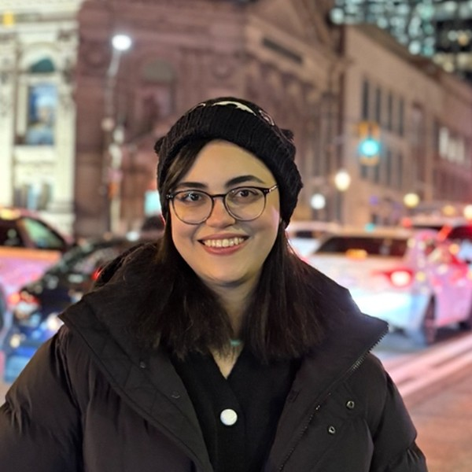

Accepted · Oct 2026
Causal Health Agent
From wearable sensor anomalies to evidence-grounded explanations. With K. Davoudi and A. Neshati.
LLM AgentsHealthCausality
I build LLM-based systems that turn complex data into explanations people can trust, from wearable-sensor health signals to culturally aware mental-health conversations.
Ontario, Canada

I'm an M.Sc. student in Computer Science at Ontario Tech University (Oshawa, Canada) and a Research Assistant, with a B.Sc. in Computer Engineering from the University of Guilan.
Thesis focus: I'm developing LLM agents for health, building on our Causal Health Agent work. The goal is to detect anomalies in wearable-sensor data and explain them with causal reasoning grounded in evidence, so that the explanations are accurate, traceable and useful to people.
From wearable sensor anomalies to evidence-grounded explanations. With K. Davoudi and A. Neshati.
A culture-based Persian conversation dataset for Person-Centered Therapy, built with LLM agents to close the gap in culturally relevant mental-health resources.
Unveiling the psychological mind of LLMs: PsychoLexQA (a dataset built from books) and PsychoLexEval for rigorous evaluation. The tuned PsychoLexLLaMA outperforms general-purpose LLMs.
Ontario Tech University, Oshawa, Canada.
ISACO, Tehran, Iran.
Ontario Tech University. Current GPA 4.3 / 4.3 (A+).
University of Guilan, Rasht, Iran. GPA 3.68/4, last two years 3.8/4.
A waste-reduction app built during a one-day GDG Markham hackathon on community sustainability. Users scan an item to find which local bin or depot it belongs in, log it or give it away, and earn points redeemable at local businesses.
Deep learning models that classify meningioma, glioma and pituitary tumors, plus a U-Net model for segmentation.
An RNN-based model that judges how similar two sentences are, covering data labeling, text processing and classification.
A CNN that sorts images into sunrise, cloudy, sunny and rainy.
A neural network built from scratch and with ML frameworks to predict pass or fail from educational characteristics.
A Connect-4 game with a graphical interface and an AI opponent powered by the negamax algorithm.
Deep learning and ML models on multivariate time series to predict future demand from historical data.
Open to research collaborations and AI roles. The best way to reach me is by email.
farnaz.mirnezami@gmail.com